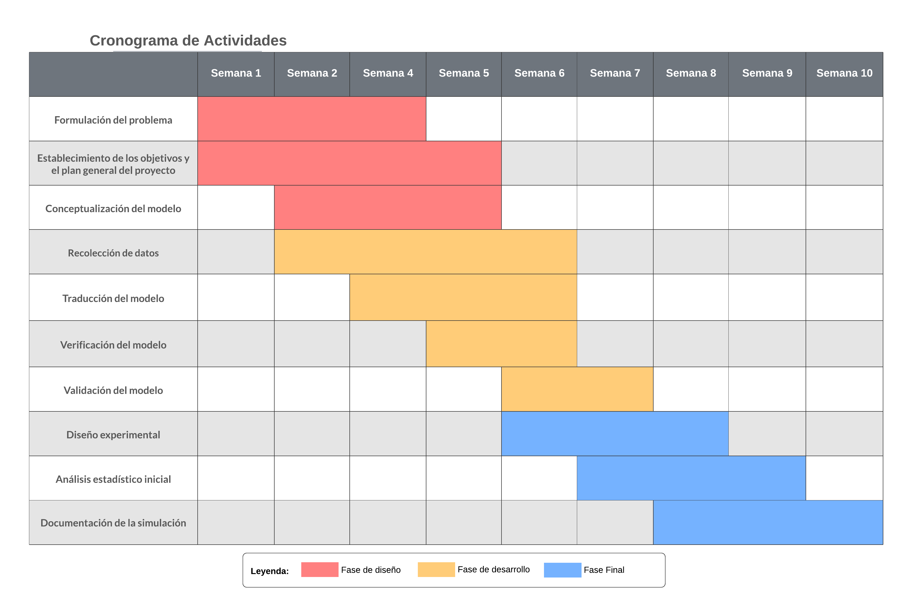

El propósito del siguiente documento es presentar una problemática que se encuentra en
cualquier lugar donde se presente una cantidad excesiva de personas. La teoría de colas es un
estudio matemático que busca entender el comportamiento de las líneas de espera dentro de un
sistema, donde el cliente presenta una solicitud para que se le presten un servicio y este a su vez
dependerá de una variante, la demanda, ya que con esta se determina el tiempo de espera que
debe tener la persona hasta obtener lo que requiere. El ecosistema a estudiar se presenta dentro
de los parques de diversiones en los cuales se presenta problemas a la hora de ingresar a
diferentes atracciones, donde las personas pueden durar mucho mas tiempo realizando las colas
que divirtiéndose en los juegos ¿Existirá alguna forma para que las personas puedan divertirse
más y así disminuir el tiempo de espera en las diferentes atracciones?
La teoría de líneas de espera inicia con el trabajo de Agner Krarup Erlang matemático Danés, el
cual en el estudio de líneas telefónicas obtuvo la fórmula para la distribución del número de líneas
de espera, a partir de aquí la teoría de colas se aplica en un sinfín de estudios encargados del
comportamiento de sistemas como el tráfico automovilístico, las filas de un banco o el flujo de
mensaje.
El objetivo principal de la teoría de colar es modelar el sistema que presenta estas líneas de
espera, con el fin de observar el comportamiento y posibles alternativas de solución para obtener
el resultado más optimo según el estudio que se realice. Teniendo esto presente, la teoría de colas
será fundamental para el desarrollo del estudio, este se centrará en el sistema que conforma un
parque de diversiones, donde se concentra una población grande de personas las cuales desean
probar cada atracción presente.
Este sistema a estudiar presenta múltiples variables ya que no se van a presentar los mismos
escenarios, puede influir ya sea la hora del día, un día especial en el año, el clima, los precios de
cada una de las atracciones, la fama de cada juego, entre otras. Las ferias encargadas de los
parques de diversiones han aplicado una transformación al sistema donde se usa el Fast Pass, este
es un método para agilizar las colas, pero ¿Es efectivo? ¿Las personas invierten menos tiempo en
esperas y más en divertirse?
Uno de los principales problemas que se presentan en cualquier tipo de cola, o fila, está en el tiempo de espera que implica estar en estas. Este tiempo de espera depende de 2 variables: la tasa de servicio, o el tiempo en el cual sale gente de la fila; y la tasa de llegada, que se refiere a la velocidad con la que ingresan personas a la fila. Es a partir de esto que funcionan todas las colas.
Los parques de diversiones son centros de recreación que atraen a multitudes de personas que desean disfrutar de las distintas gamas de atracciones que se manejan. Siendo así, uno de los problemas a los que tienen que enfrentarse tanto los visitantes son las largas colas que se pueden presentar en muchas de las atracciones. Esto, en el peor de los casos, puede generar descontento en los visitantes ya que gran parte de su visita al parque haya sido perdida esperando, lo que a la larga, podría afectar la reputación del parque y las ganancias del mismo.
Partiendo de esto, el problema que se busca enfrentar son estas mismas colas, al igual que las diferentes técnicas que se pueden emplear para poder reducir el tiempo de espera promedio de los visitantes. De esta manera, se busca mejorar la experiencia general del público asistente que, en respuesta, implicaría una mejora de los ingresos generados por el parque.
El presente proyecto busca entonces la determinación de la efectividad de diferentes estrategias en la reducción de los tiempos de espera promedio en las colas de las atracciones de un parque. A partir de esto se espera encontrar las maneras más optimas de reducir las colas en un parque con el fin de proveer una mejor experiencia a los visitantes del mismo. De igual manera, se espera que tras el desarrollo del presente proyecto, los datos recolectados en el mismo permitan la adopción de estas estrategias en otros campos en los cuales la teoría de colas toma lugar.
Una de las ventajas de emplear la simulación digital en el desarrollo de esta problemática recae en la escala con la cual estamos trabajando. Al ser un parque de diversiones nuestro enfoque principal, el tratar de realizar pruebas directamente sobre el parque puede traer consecuencias negativas en la experiencia de los visitantes, así mismo, la implementación de la infraestructura necesaria para algunas de las estrategias puede llegar a ser de alta complejidad. Siendo así, estos problemas no se presentan en el caso de la simulación digital, por lo que el desarrollo de las pruebas de las diferentes estrategias, puede hacerse sin mayor dificultad.
